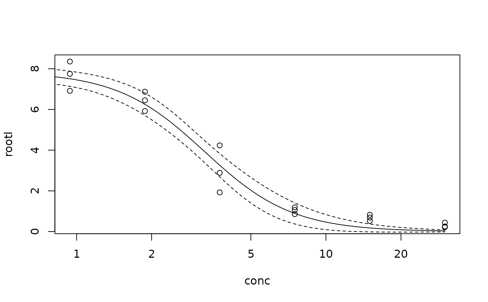

Print, summary, coefficients, covariance matrix, log-likelihood, fitted values, residuals,
predictions with confidence and prediction intervals, and simulation for fits of
drmTMB. Confidence intervals of the coefficients are given by
confint.drmTMB, effective doses by ed.
Usage
# S3 method for class 'drmTMB'
print(x, digits = max(3L, getOption("digits") - 3L), ...)
# S3 method for class 'drmTMB'
summary(object, vcov. = NULL, ...)
# S3 method for class 'summary.drmTMB'
print(x, digits = max(3L, getOption("digits") - 3L), ...)
# S3 method for class 'drmTMB'
logLik(object, ...)
# S3 method for class 'drmTMB'
nobs(object, ...)
# S3 method for class 'drmTMB'
df.residual(object, ...)
# S3 method for class 'drmTMB'
fitted(object, random = TRUE, ...)
# S3 method for class 'drmTMB'
residuals(
object,
type = c("pearson", "response", "quantile"),
random = TRUE,
...
)
# S3 method for class 'drmTMB'
predict(
object,
newdata = NULL,
random = TRUE,
se.fit = FALSE,
interval = c("none", "confidence", "prediction"),
level = 0.95,
boot = NULL,
nsim = 1000,
seed = NULL,
type = c("response", "parameters"),
scale = c("original", "link"),
vcov. = NULL,
...
)
# S3 method for class 'drmTMB'
coef(object, ...)
# S3 method for class 'drmTMB'
vcov(object, ...)
# S3 method for class 'drmTMB'
simulate(object, nsim = 1, seed = NULL, random = TRUE, ...)Arguments
- x, object
a drmTMB object
- digits
number of significant digits in the printed output
- ...
further arguments, not used
- vcov.
for summary and predict, the covariance of the estimated parameters for the standard errors and Wald intervals: a matrix as vcov() of the fit, or a function of the fit that returns one, e.g. the sandwich covariance
vcovrobust. NULL (default) for vcov() of the fit. The prediction intervals of predict that are simulated use it for the draws of the fixed parameters.- random
logical; if TRUE (default), the random effects are included in the predictions, fitted values and residuals (conditional residuals). For simulate, if TRUE, new random effects are drawn for each simulation, otherwise the fitted random effects are kept. For prediction intervals, random=TRUE gives the interval of a new observation in the group of each row of newdata, and random=FALSE the interval of a new observation in a new group, including the variance of the random effects. Rows of newdata with a level that is not in the fitted data are treated as new groups for that random effect term.
- type
for residuals, the type of residuals: "pearson" (default), the response residuals divided by the standard deviation of the fitted distribution and multiplied by the square root of the weights; "response", the observed minus the fitted values, as proportions for a binomial response; or "quantile", randomised quantile residuals (Dunn and Smyth, 1996), which are standard normal under the model. For the gaussian family, the quantile residuals are multiplied by the square root of the weights, as precision weights with standard deviation sigma/sqrt(w); for the other families they do not use the weights, as a weighted log-likelihood is not the density of a distribution of the observation. The quantile residuals are random for the count families; use set.seed for reproducible values. For the lognormal family, the pearson and quantile residuals are the standardised residuals of log(y), (log(y) - log(f))/sigma, multiplied by the square root of the weights. With a variance function, the gaussian and lognormal residuals are divided by sigma g instead of sigma; with a correlation structure, the quantile residuals are normalized, multiplied within each series by the inverse Cholesky factor of its correlation matrix, so that they are independent standard normal under the model (the "normalized" residuals of nlme).
For predict, the type of prediction: "response" (default), the mean response at the doses of newdata, or "parameters", the parameters b1-b5 of the curve of each row of newdata (with its covariates in fform and, with random=TRUE, the random effects of its groups); newdata then needs no dose. The standard errors of the parameters are those of the estimates, by the delta method, and their confidence intervals are computed on the scale of the link and back-transformed; with random=TRUE, they include the uncertainty of the predicted random effects of the fitted groups. Prediction intervals of the parameters add the variance of the random effects of the terms without a fitted level, the parameters of a new group, and are not available with boot.
- newdata
a data frame for prediction. If NULL, the original data is used.
- se.fit
logical, if TRUE, predict returns the standard errors of the predicted means, by the delta method; with random=TRUE they include the uncertainty of the predicted random effects.
- interval
type of interval of predict: "none", "confidence" for confidence intervals of the mean, computed on the log scale for the poisson, negative binomial and lognormal families and on the logit scale for the binomial, beta-binomial, beta and event families and back-transformed, or "prediction" for prediction intervals of a new observation with weight 1. Gaussian and lognormal models with small-sample inference (without random effects, see
drmTMB) use t quantiles with n - p degrees of freedom and the unbiased residual variance. For the gaussian and lognormal (on the log scale) families without boot, the prediction intervals use the normal (or t) distribution, and the variance of the random effects of new groups is added by the delta method. Otherwise they are quantiles of new observations simulated at nsim draws from the normal approximation of the fixed and random effects, with the variance parameters kept at their estimates, or at the bootstrap fits (see boot); with new random effects for new groups; for a binomial response as proportions, with the number of trials from the response in newdata (one for a binary response).- level
confidence level of the intervals of predict
- boot
a bootstrap sample of the model from
bootstrap. predict then gives the standard deviation of the bootstrap predictions as se.fit, percentile confidence intervals, and prediction intervals simulated at the bootstrap fits, including their variance parameters. The bootstrap responses have new random effects, so for random=TRUE the random effects of the fitted groups are drawn, for each bootstrap fit, from the Laplace approximation of their conditional distribution given the original data at the parameters of that fit.- nsim
number of response vectors to simulate; for predict, the number of parameter draws for simulated prediction intervals
- seed
an optional seed for the random number generator
- scale
for type="parameters", the scale of the parameters: "original" (default) or "link", the scale of the coefficients, see the argument parlink of
drmTMB.
Value
Estimated model coefficients, variance-covariance matrix, or predictions.
predict returns a vector of predicted means, or, with se.fit=TRUE or an interval, a data frame with
the predicted means (fit), their standard errors (se.fit), and the limits of the intervals (lwr, upr).
With type="parameters", it returns a matrix of the parameters used by the model, a row for each row of
newdata, or, with se.fit=TRUE or an interval, a data frame with the row of newdata (row), the
parameter, and fit, se.fit, lwr and upr.
coef and vcov include the variance parameters: for each random effect term the log standard deviations
(log_sd:b1|group, or log_sd:b4:x|group for a random slope of b4 in x) and, for correlated random effects, the parameters of the correlation matrix
(corr_par:b2,b1|group, unconstrained elements of the lower triangle of its Cholesky factor, by row);
and the log residual standard deviation (log_sigma, gaussian; of log(y) for lognormal), log precision (log_phi, beta), log size
(log_theta, nbinom2), log dispersion (log_phi, nbinom1) or log precision (log_phi, betabinomial); and
the parameters of a residual correlation structure (cor_par:...) and variance function (var_par:...),
see correlation.
summary returns a summary.drmTMB object with the coefficient table (Estimate, Std. Error), the
variance components, log-likelihood, AIC and BIC, sample sizes, a Pearson dispersion statistic for
poisson, binomial and event models, and convergence information. logLik returns the log-likelihood at the
estimates, with the number of free coefficients and variance parameters as degrees of freedom.
df.residual returns the residual degrees of freedom n - p of gaussian and lognormal models without random
effects (small-sample inference, see drmTMB), and NULL otherwise; as the df
argument of multcomp::glht for effective doses, it gives multivariate t instead of normal
quantiles.
simulate returns a data frame with nsim columns of simulated responses at the estimated
parameters; for a binomial response given as cbind(successes, failures), the number of successes, and
for the event family the counts of the intervals.
Details
The fitted values and predictions are the mean response, the median for the lognormal family (see
drmTMB), and the probability for binomial responses. With random=FALSE, they are the
curve with the random effects set to zero (the typical group), not the mean over the groups.
References
Dunn, P. K. and Smyth, G. K. (1996). Randomized quantile residuals. Journal of Computational and Graphical Statistics 5, 236-244.
Examples
mod <- drmTMB(rootl ~ conc, data = ryegrass, model = "loglogistic",
start = c(b1 = 0, b5 = 0), fix = c(b1 = TRUE, b5 = TRUE))
mod
#> Call:
#> drmTMB(form = rootl ~ conc, data = ryegrass, start = c(b1 = 0,
#> b5 = 0), fix = c(b1 = TRUE, b5 = TRUE), model = "loglogistic")
#>
#> Model: loglogistic
#> Family: gaussian, identity link for the asymptotes
#>
#> Coefficients:
#> b2:(Intercept) b3:(Intercept) b4:(Intercept)
#> 7.855 -2.470 3.263
#> Fixed: b1:(Intercept) = 0, b5:(Intercept) = 0
#>
#> Residual standard deviation: 0.5616
summary(mod)
#> Call:
#> drmTMB(form = rootl ~ conc, data = ryegrass, start = c(b1 = 0,
#> b5 = 0), fix = c(b1 = TRUE, b5 = TRUE), model = "loglogistic")
#>
#> Model: loglogistic, decreasing curve
#> Family: gaussian, identity link for the asymptotes
#>
#> Number of observations: 24
#> Log-likelihood: -18.6 (df = 4), AIC: 45.21, BIC: 49.92
#>
#> Coefficients:
#> Estimate Std. Error
#> b2:(Intercept) 7.855 0.204
#> b3:(Intercept) -2.470 0.342
#> b4:(Intercept) 3.263 0.196
#> Fixed: b1:(Intercept) = 0, b5:(Intercept) = 0
#>
#> Residual standard deviation: 0.5616 on 21 degrees of freedom
#>
#> Optimiser: nlminb: both X-convergence and relative convergence (5), maximum absolute gradient 4.3e-07
coef(mod)
#> b2:(Intercept) b3:(Intercept) b4:(Intercept) log_sigma
#> 7.8554276 -2.4703243 3.2633557 -0.6437663
vcov(mod)
#> b2:(Intercept) b3:(Intercept) b4:(Intercept) log_sigma
#> b2:(Intercept) 4.177173e-02 2.615330e-02 -1.837996e-02 2.340937e-10
#> b3:(Intercept) 2.615330e-02 1.167476e-01 -5.070105e-03 9.333609e-10
#> b4:(Intercept) -1.837996e-02 -5.070105e-03 3.857539e-02 -4.403207e-10
#> log_sigma 2.340937e-10 9.333609e-10 -4.403207e-10 2.083333e-02
logLik(mod)
#> 'log Lik.' -18.60413 (df=4)
AIC(mod)
#> [1] 45.20827
nobs(mod)
#> [1] 24
df.residual(mod)
#> [1] 21
head(fitted(mod))
#> [1] 7.855428 7.855428 7.855428 7.855428 7.855428 7.855428
head(residuals(mod, type = "quantile"))
#> [1] -0.4904510 0.2574385 0.8425222 -1.0780786 -0.8554924 0.1906627
# confidence and prediction intervals, and the parameters of the curve
nd <- data.frame(conc = c(1, 3, 10))
predict(mod, newdata = nd, interval = "confidence")
#> fit se.fit lwr upr
#> 1 7.4541188 0.1827779 7.07401135 7.8342263
#> 2 4.3344621 0.2591552 3.79551934 4.8734049
#> 3 0.4648086 0.1775471 0.09557932 0.8340379
predict(mod, newdata = nd, interval = "prediction")
#> fit se.fit lwr upr
#> 1 7.4541188 0.1827779 6.2259486 8.682289
#> 2 4.3344621 0.2591552 3.0482352 5.620689
#> 3 0.4648086 0.1775471 -0.7600386 1.689656
predict(mod, newdata = nd[1, , drop = FALSE], type = "parameters")
#> b1 b2 b3 b4 b5
#> [1,] 0 7.855428 -2.470324 3.263356 1
# the fitted curve with a confidence band
grid <- data.frame(conc = exp(seq(log(0.5), log(30), length.out = 100)))
pr <- predict(mod, newdata = grid, interval = "confidence")
plot(rootl ~ conc, data = subset(ryegrass, conc > 0), log = "x")
lines(grid$conc, pr$fit)
lines(grid$conc, pr$lwr, lty = 2)
lines(grid$conc, pr$upr, lty = 2)

# new responses simulated from the fitted model
head(simulate(mod, nsim = 2, seed = 1))
#> sim_1 sim_2
#> 1 7.526345 8.181028
#> 2 7.951897 7.825943
#> 3 7.416463 7.773587
#> 4 8.693445 7.082826
#> 5 8.028521 7.604251
#> 6 7.424427 8.074977